Free, open CAD for Mac.
You can take the derivative of it.
Parametric modeling on a BRep kernel written from scratch in Rust. Electronics, DFM and FEA are built in, and an agent can work in the same viewport you're looking at. No account, no cloud, no subscription.
macOS 15+ · Apple silicon · signed, notarized, updates itself
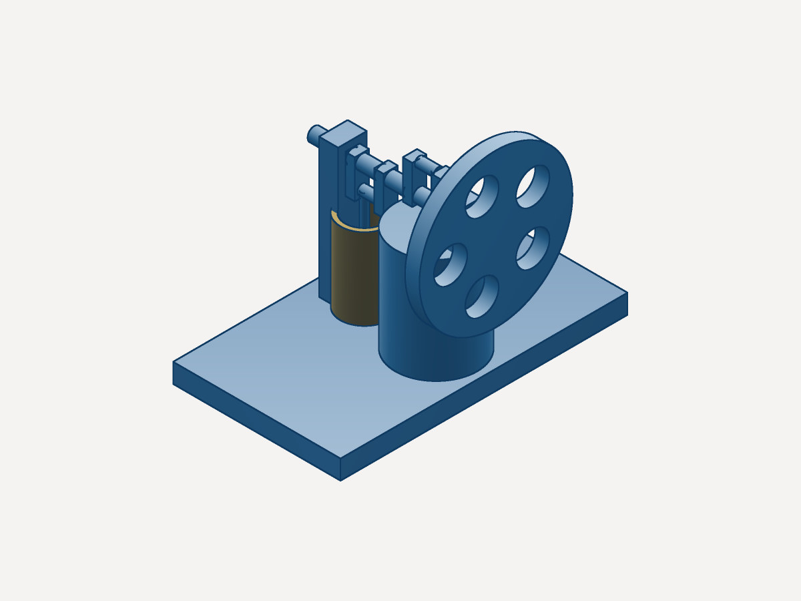
Measured, not claimed
Apple silicon Mac, a fresh process every run. Method and raw numbers in the speed pass.
Documents are plain-text .vcad files you can diff, review and keep in git. Nothing leaves your Mac unless you send it.
The board and its enclosure live in one document, so clearance between copper and housing is a check you run.
DFM flags thin walls and offers a fix. FEA shows where the part bends, on the part you're editing.
All thirteen ship inside the app (File ▸ Open Sample). The renders here come from vcad-render, the kernel's own line-art renderer.
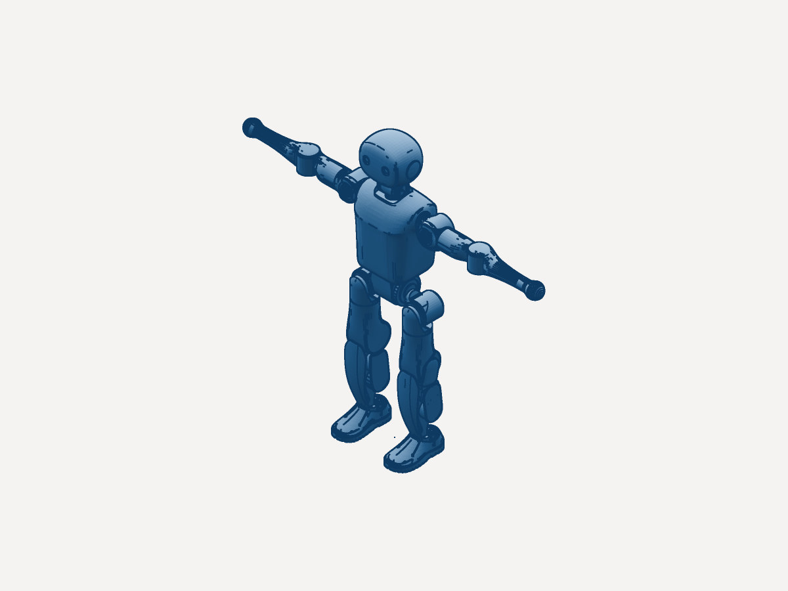
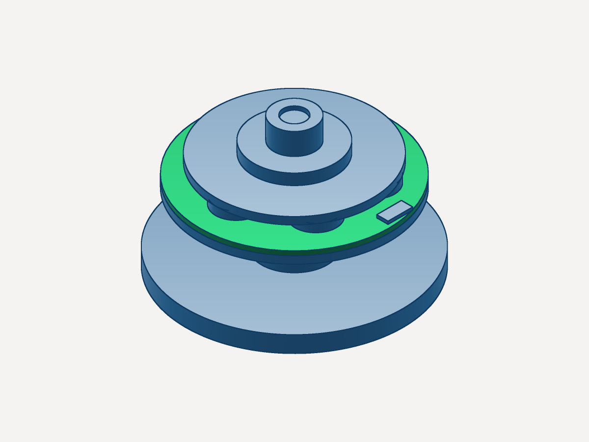
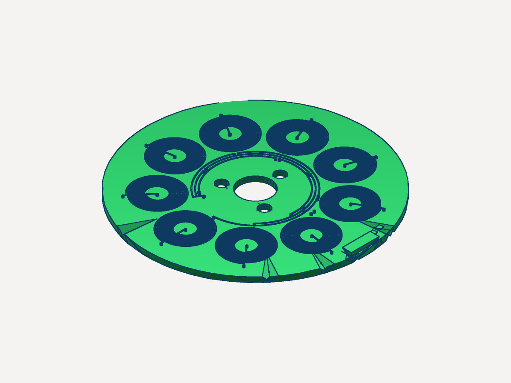
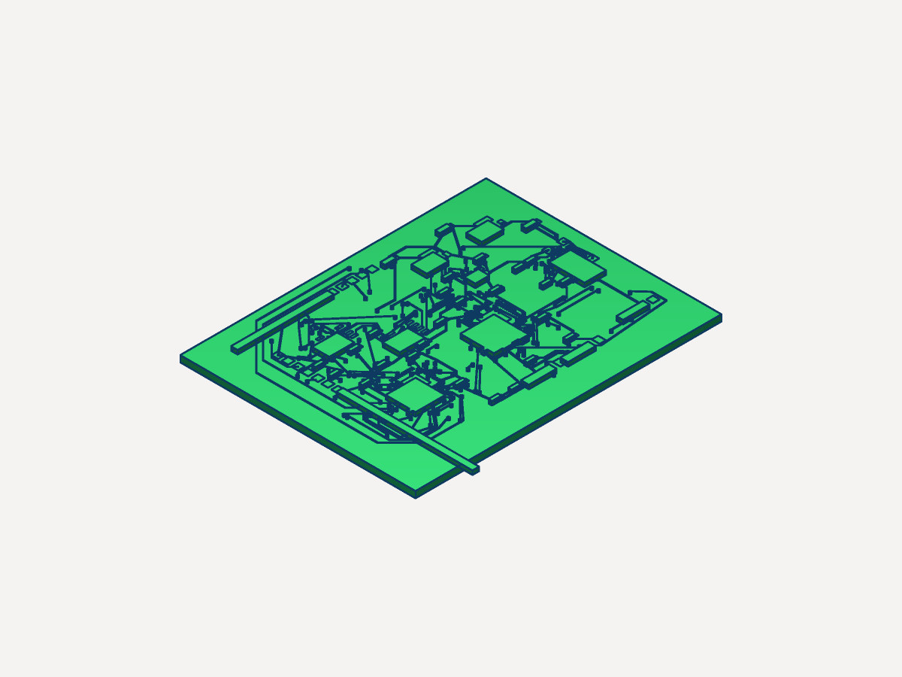
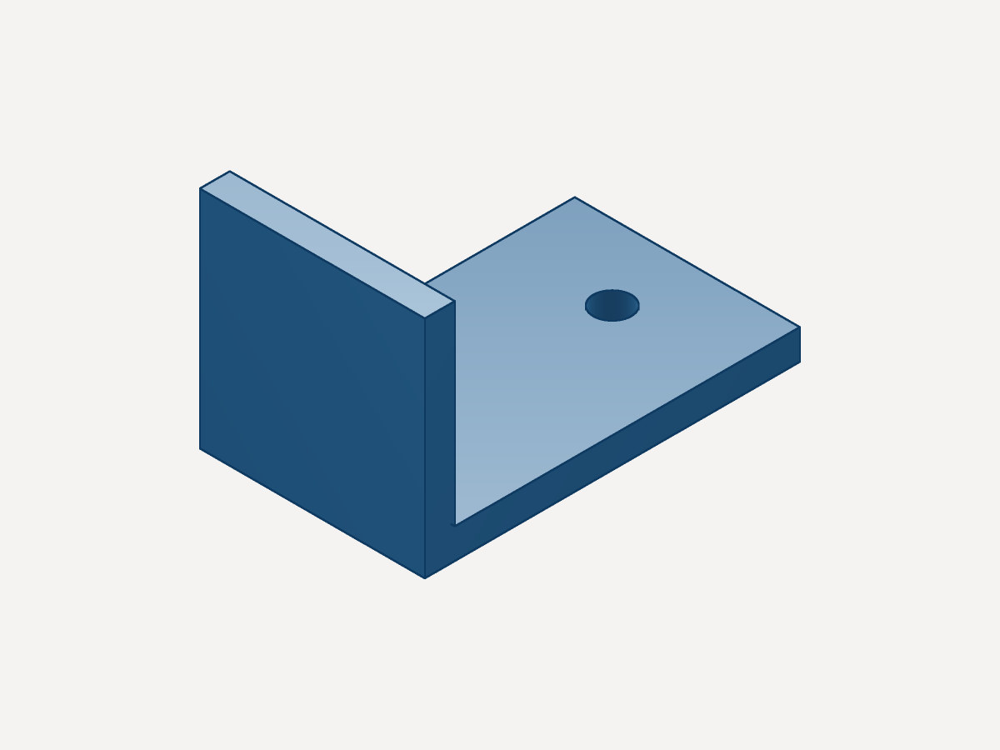
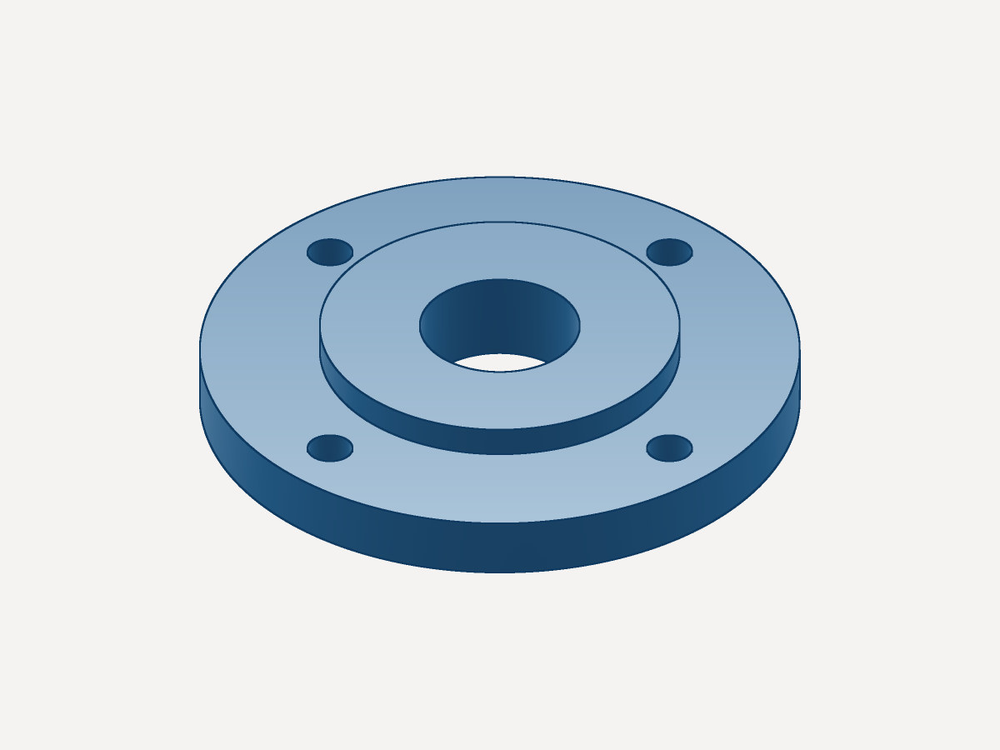
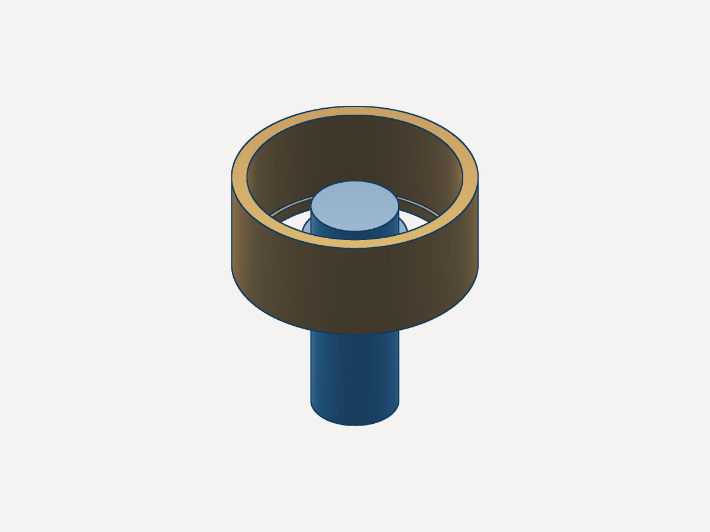
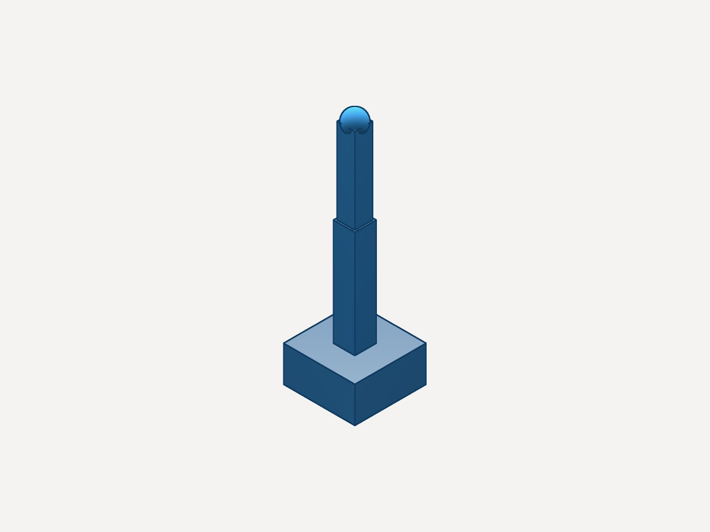
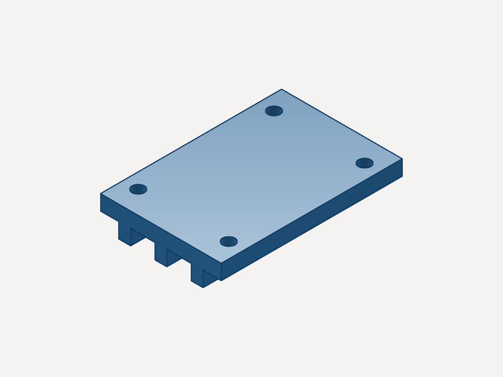
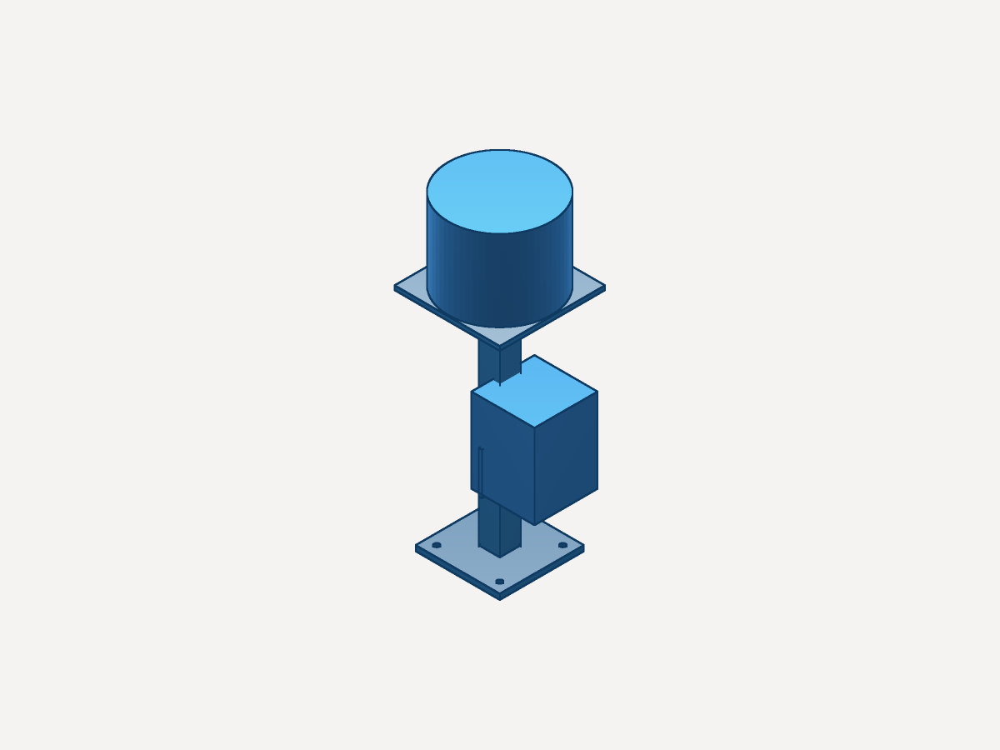
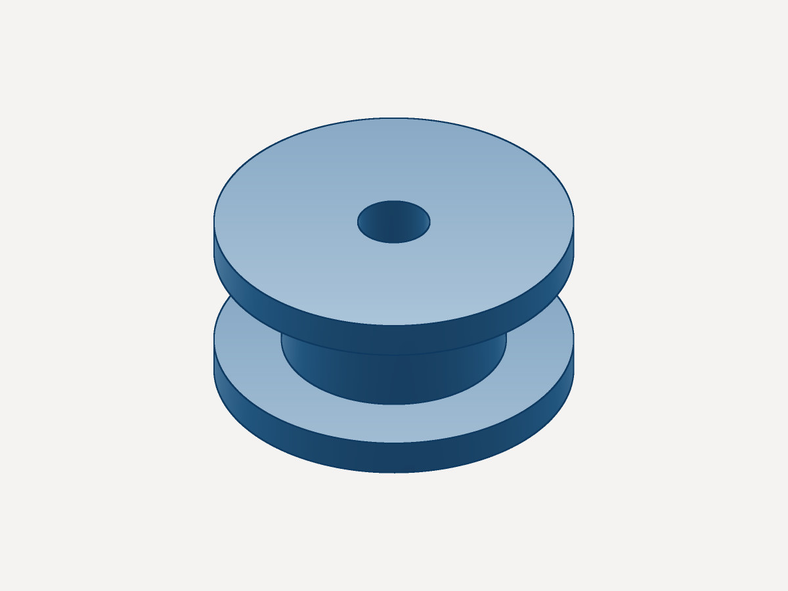
Bring your agent
vcad serves MCP on your machine. Help ▸ Connect Claude writes the config, and then the agent models, runs DFM and FEA, and frames the camera in the window you're looking at. Every change is a named undo step.
Headless too: npx -y @vcad/mcp gives any MCP client the kernel, with no app at all.
{
"mcpServers": {
"vcad-app": {
"command": "node",
"args": ["/Applications/vcad.app/Contents/Resources/vcad-app-mcp.mjs"]
}
}
}The paper
The kernel gives exact parameter gradients through tessellation, mass properties, fillet radius and rigid-body contact rollouts, so an optimizer can move a real CAD parameter instead of a mesh.
.vcad parameters, end to end